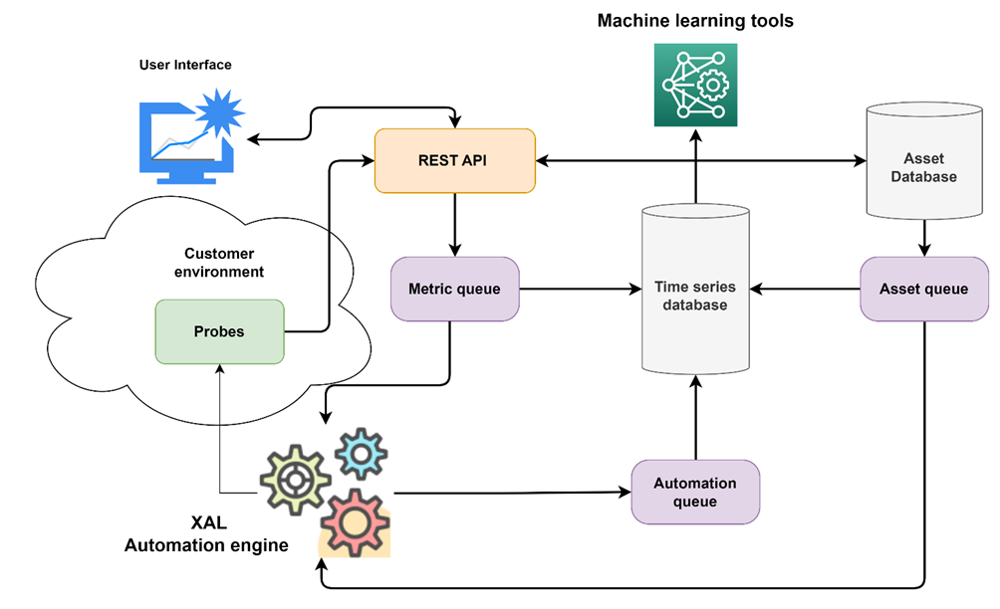
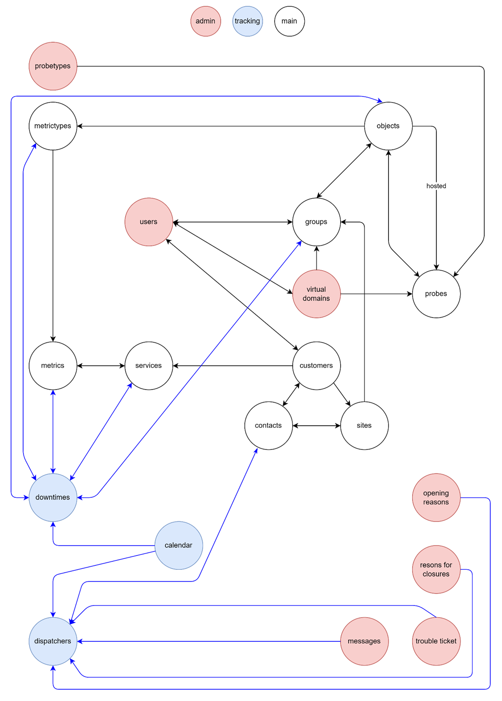

Low Level Documentation
The Xautomata platform is designed to allow the ingestion, management and distributed processing of data on large data sets and large clusters by leveraging distributed software and cluster architectures of Apache Kafka, Apache Spark, FastAPI, Postgres, on top of the Kubernetes platform.
The document describes the low level architecture, to give context to the low level insights the high level architecture summary is reported.
Intermediate level architecture
The system described by the high level architecture has been developed using standard components, present in most modern system architectures, to allow interaction between the client environment (data collection via probes), the user interface and the automation engine (XAL).
The REST API endpoints are the only entry and exit point from the platform and use modern standards for security and management (OAUTH2 authentication, OpenAPI definition). Metric data is stored in a time series database (a time-partitioned database), while asset data is stored in a traditional relational database.
Changes to relevant parts of the relational database feed the Asset queue and are implemented through CDC (Change Data Capture) which will provide data to the Asset queue. This allows the XAL automation engine to be aware of changes to Assets (e.g. an asset may be placed in maintenance mode and thus temporarily excluded from automation) without the need for continuous polling from the database, which otherwise could represent a potential bottleneck for the architecture.
Metric data is organized, collected and sent directly to the metric queues, provided specific constraints are met.
Automation data is produced by the automaton and sent to the automation queue, where relevant information about changes to the automaton state is stored.
All data is stored in the time series database following specific retention rules.
Machine learning algorithms operate on top of the time series database to perform data analysis, anomaly detection and forecasting relevant to the platform.

Fig.1 - Platform data flow diagram
Container architecture, software components
The platform has been implemented based on containers and orchestrated by Kubernetes (https://kubernetes.io/), designed to be easily customizable and deployed in both a multi-tenant and single-tenant environment.
Kubernetes allows deploying the platform on multiple public and private cloud providers and on-premise as well, the tested distribution are:
- Azure
- AWS
- OpenShift
- RKE
- Tanzu
The current supported Kubernetes versions are: from 1.27 to 1.31.
We use Helm charts (https://helm.sh/) to provide deployment customizations and provide customizations of the main parameters of the platform.
Internally we use the following components:
- Apache Spark for distributed execution of the automation engine (XAL)
- FastAPI (https://fastapi.tiangolo.com/) as a fast, performant and self-documenting API REST platform, Postgres for the relational database on assets and time series
- Apache Kafka (https://kafka.apache.org/) as a queue system.
- Postgres database for both relational and time series data. We use row level security to allow multiple tenants in the same distribution of the architecture.
- Docker Registry for probe distribution.
A distribution archive of the current Xautomata is provided with the current documentation.
The documentation of each component is included in the respective source code repositories.
The database structure
The structure of XAutomata is complex and mixes together elements of a tree hierarchy with elements from a graph, but if you limit yourself to interacting with a client's asset elements the complexity is reduced a bit. We can imagine having a client's asset and a series of services that point to the asset, going to enrich the information present there, or adding functionality.
The asset
As an asset we define everything that constitutes the physical perimeter of the customer. The asset is defined hierarchically by the following components (in descending hierarchical order):
- Customer
- Site
- Group
- Object
- Metric_type
- Metric
- Service
Each of these levels contains information, the customer defines the customer, the sites define the customer's branches, etc. Each level is connected with a one-to-many link with the lower level; therefore, a site has groups within it, but a group cannot be in multiple sites. There is one exception which are the groups, for most of their use they maintain a one-to-many relationship with the metric_types, but an object can be contained in multiple groups. So let's say that between groups and objects there is a many-to-many relationship.
Each element can be identified by a series of primary keys that also include the UUID of its upper level. This is obviously not true for objects because of the many-to-many nature with groups.
The services, which close the queue, are a second exception: they have a hierarchical importance similar to the metrics, they can be linked to the metrics with a many-to-many link but they can also not be linked to the metrics and live completely detached from the asset. The services represent additional information calculated from customer values or other data, they are not necessarily linked to the asset. If they are linked to the asset it is through the metrics, in these cases there is a pointer to all the metrics that contributed to forming the service.
The structure from the customer to the service represents the asset and is called the tree.
To navigate the tree there are APIs that allow you to obtain the link information of one layer with the others. To make an example, if I know a metric and I want to know in which object it is contained, in the data of the metric itself there is the uuid of the metric_type that contains it. With that uuid, I can get the details of the metric_type in which the uuid of the object that contains it is present. With that uuid I can go and ask for the details of the object I was interested in knowing.
It is equally true in the other direction, I know an object I can know all the metric_types that compose it, chosen one I can ask for all the metrics that compose it.
This way of navigating the tree finds some variations when trying to overcome the layers with many-to-many relationships. To know which groups an object is contained in and vice versa, there are special APIs that given one of the two layers, return you the second. This also applies to services having the same many-to-many nature.
There are shortcuts to navigate the tree, these "shortcuts" come in the form of the tree_hierarchy API set. This API is designed to retrieve an element in the tree with all its links with the upper layers.
Time series
The asset represents the objects that produce data, but the data itself is collected in a different place. Specifically in the time series tables. These series are divided into two types, state series and value series.
Status series are a succession of information collected in dictionaries, they can contain any type of information and carry a gravity index with them. The value series are successions of numbers, ideal for collecting numeric data such as temperature, speed etc.
The metrics are the layer where these series are saved. Each metric is directly linked to one and only one time series, be it state or value.
The services can be linked to time series in turn, and, unlike the metrics, can point to both value and state series at the same time.
Additional information
The relationships do not end with the asset, there are a myriad of additional explorable information, such as users, dashboards and so on. However, the way to navigate these links is the same as navigating the tree.
The complete connection between all the elements that can be called up with APIs is presented in the diagram below.

APIs
The complete library of endpoints that can be used to interact with XAutomata can be found at the following addresses:
- https://portal.xautomata.com/api/v0/docs#/
- https://portal.xautomata.com/api/v0/redoc
It is also possible to use a Python library called Hive (indexed on Pypi), to facilitate the use of the following endpoints if you are writing a Python integration (documentation on https://sherlogic.github.io/xautomata-hive/)
Log management
The microservices architecture is completely Kubernetes oriented and information can be accessed via kubctl accesses.
To access the display of application logs, it is necessary to identify the active pod that is running or that has run the operation and use the command:
In addition, access logs to the APIs are logged in a kafka queue to be "consumed" by an operator who needs it. A 7-day retention is currently set which can be customized.